Et si vous aviez un assistant IA qui pouvait surveiller le marché des cryptomonnaies pour vous 24h/24 et 7j/7, faire des recherches sur les pièces, analyser les configurations, et faire tout cela automatiquement ? Pendant que vous dormez, pendant que vous travaillez, pendant que vous faites n'importe quoi d'autre ? C'est exactement ce que permettent les agents gérés de Claude. Et dans cette vidéo, je vais vous montrer ce que c'est réellement, ce qu'ils font, et comment vous pouvez les utiliser en tant que trader, même si vous n'avez jamais écrit une seule ligne de code de votre vie.
Interface & Outils : Interface de terminal CLI / Interface de script d'analyse.
Contenu textuel & Code : Analyse textuelle des cours du Bitcoin (~$66,850) et d'Ethereum (~$2,254), avec des liens de sources web et métriques de résistance/support.
Action / Démonstration : Exécution d'un script ou d'un prompt d'analyse automatisée des niveaux de prix des cryptomonnaies.
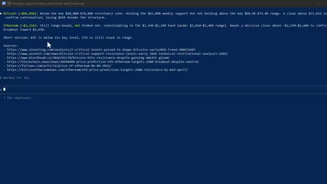
🔍 AgrandirEntrons dans le vif du sujet. Donc Claude est l'IA d'Anthropic. La plupart des gens le connaissent comme un chatbot. Vous tapez quelque chose, il répond. C'est la version de base. Claude Managed Agents est un niveau complètement différent. Anthropic vous donne en fait deux façons de construire avec Claude. La première est l'API Messages. C'est un accès direct au modèle où vous contrôlez tout. Vous construisez votre propre boucle d'agent, gérez l'exécution des outils, gérez vous-même l'environnement d'exécution. Contrôle total, responsabilité totale.
Interface & Outils : Documentation officielle de la plateforme Anthropic (platform.claude.com).
Contenu textuel & Code : Comparaison détaillée entre "Messages API" (contrôle personnalisé, gestion manuelle) et "Managed Agents" (infrastructure gérée, $0.08 / session-hour).
Action / Démonstration : Présentation des deux approches de construction proposées par Anthropic pour les développeurs.
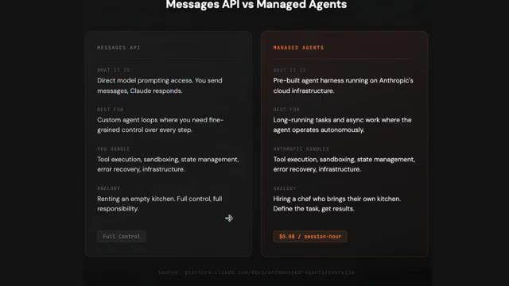
🔍 AgrandirClaude Managed Agents est différent. C'est un harnais d'agent pré-construit qui s'exécute entièrement sur l'infrastructure d'Anthropix. Vous définissez ce que l'agent doit faire. Anthropix s'occupe de tout le reste. Le bac à sable, l'exécution des outils, la gestion des états, la récupération d'erreurs. Voyez les choses ainsi. L'API Messages, c'est louer une cuisine vide.
Interface & Outils : Navigateur web affichant la documentation technique d'Anthropic / Claude API Docs.
Contenu textuel & Code : Tableau listant les champs de configuration d'un agent (name, model, system, tools, mcp_servers, skills, callable_agents, description, metadata).
Action / Démonstration : Navigation dans la documentation technique pour présenter la structure et les paramètres de configuration des Claude Managed Agents.
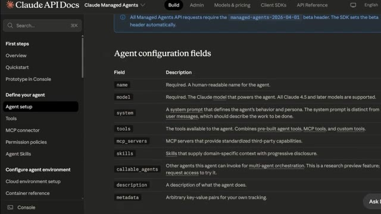
🔍 AgrandirManaged Agents embauche un chef qui apporte sa propre cuisine. Au lieu de poser une question à Claude et d'attendre une réponse, vous donnez une tâche à Claude et il va la faire de lui-même, de manière autonome. Il peut naviguer sur le web, lire des fichiers, exécuter du code, chercher des informations et vous revenir avec les résultats, tout cela sans que vous restiez assis là à le relancer à chaque étape. Et voici le point clé. Il tourne dans le cloud, sur l'infrastructure d'Anthropix. Donc il continue de travailler même si vous fermez votre ordinateur portable, même si votre connexion Internet se coupe. L'agent tourne simplement en arrière-plan en faisant son travail. Pensez-y comme à l'embauche d'un chercheur
Interface & Outils : Terminal de commandes (CLI Claude Code) et navigateur web (site d'Anthropic).
Contenu textuel & Code : Commandes bash exécutant des scripts Python d'API de trading (weex-contract_api.py), gestion des leviers et des ordres d'achat (long) sur ETHUSDT.
Action / Démonstration : Exécution autonome de scripts de trading et appels d'API pour configurer un effet de levier et passer un ordre d'achat.
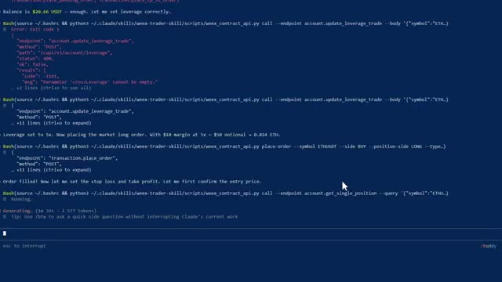
🔍 Agrandiranalyste qui ne dort jamais, ne se fatigue jamais et vous coûte moins d'un dollar par jour à faire fonctionner. Pour les traders, c'est une très grande affaire. Vous ne construisez rien. Vous ne maintenez rien. Vous définissez simplement la tâche, et elle s'exécute. Au fait, si vous voulez les instructions de configuration complètes sur la façon de trader en utilisant votre application Telegram, comment intégrer Claude pour trader et afficher ou analyser les baleines sur Hyperliquid, le tout automatiquement, chaque instruction, chaque guide étape par étape, et tous les modèles d'agents que j'utilise personnellement. Tout cela se trouve à l'intérieur de la communauté AI Trade Edge. Le lien est dans la description.
Interface & Outils : Documentation technique web et interface de présentation des agents gérés / MCP.
Contenu textuel & Code : Texte comparatif sur les agents gérés, coût par heure de session, et liste des 78 outils de contrôle TradingView (lecture de graphiques, indicateurs, changement d'unités de temps).
Action / Démonstration : Présentation des avantages des agents autonomes et des fonctionnalités de pilotage de TradingView par l'IA.
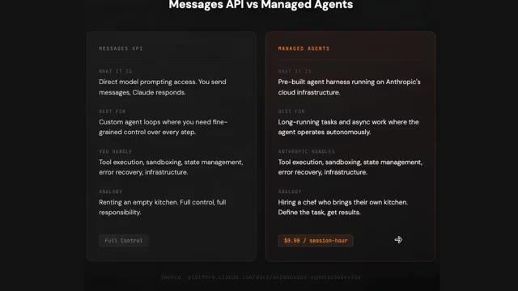
🔍 Agrandir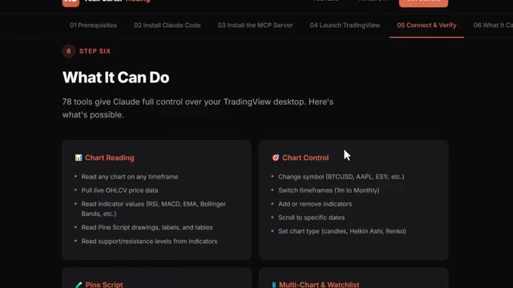
🔍 AgrandirMaintenant, laissez-moi vous montrer ce que l'agent géré de Claude fait réellement pour nous, les traders. Premièrement, la recherche de marché en pilotage automatique. Vous dites à l'agent : « Va trouver les trois principales actualités qui affectent Bitcoin et Ethereum au cours des dernières 24 heures. Résume-les et dis-moi si elles sont haussières ou baissières. » Il y va et le fait. Il navigue sur le web, lit les articles, et revient avec un résumé clair chaque matin sans que vous ayez à le petit doigt. Deuxièmement, l'analyse de pièces. Vous examinez un nouvel altcoin. Au lieu de passer une heure à lire des livres blancs, des fils Twitter,
Interface & Outils : Terminal de commandes (Claude Code dans Windows PowerShell)
Contenu textuel & Code : Texte du prompt saisi : « go find the top 3 news stories affecting Bitcoin and Ethereum in the last 24 hours, summarize them, and tell me if they're bullish or bearish » et statut « Incubating... ».
Action / Démonstration : Saisie et exécution d'un prompt dans l'agent de recherche de marché automatisé via Claude Code.
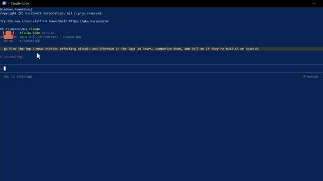
🔍 Agrandiret des publications Reddit, vous l'envoyez à l'agent. Il fait des recherches sur le projet, analyse le sentiment, examine les actualités récentes et vous fournit un compte rendu en quelques minutes. Troisièmement, configurez la surveillance. Vous pouvez donner des instructions à l'agent pour qu'il surveille des conditions spécifiques. Est-ce que Bitcoin se maintient au-dessus d'un niveau clé ? Est-ce qu'Ethereum est sorti d'un range ? L'agent peut vérifier, faire un rapport et vous le signaler. Quatrièmement, le suivi des narratifs. Quel est le secteur en vogue en ce moment ? Les jetons IA, les RWA, les layer 2. L'agent peut analyser différentes sources et vous dire où la dynamique se construit avant que cela ne devienne évident pour tout le monde.
Interface & Outils : Terminal de commandes Claude Code (v2.1.97)
Contenu textuel & Code : Invite de commande et interface CLI avec des requêtes textuelles sur les niveaux de prix des cryptomonnaies (« Is Bitcoin holding above a key level? Has Ethereum broken out of a range? »).
Action / Démonstration : Exécution et affichage d'un outil en ligne de commande pour l'analyse technique des cryptomonnaies.
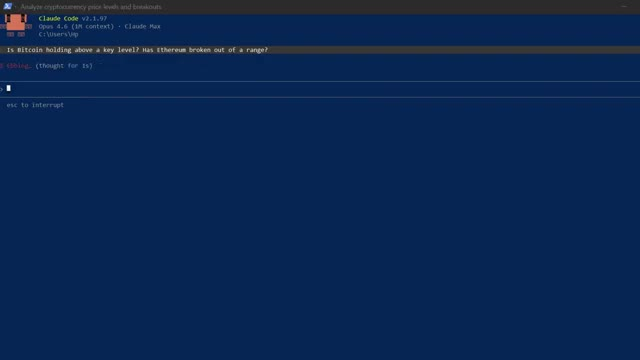
🔍 Agrandirailleurs. Et comme les sessions sont persistantes, ce qui signifie que l'agent se souvient de tout de vos conversations précédentes, vous pouvez progresser au fil du temps. Il devient de plus en plus utile à mesure que vous l'utilisez. Maintenant, je laisserai le lien vers la documentation officielle dans la description ci-dessous afin que vous puissiez suivre toutes les instructions étape par étape. Mais je veux vraiment que vous compreniez comment cela fonctionne de manière globale parce que c'est en réalité très simple. Il y a quatre éléments. D'abord, l'agent. C'est le cerveau.
Interface & Outils : Terminal de commandes (CLI)
Contenu textuel & Code : Analyse des prix et niveaux clés pour Bitcoin (~66 850 $) et Ethereum (~2 254 $) avec des liens de sources (Investing.com, Ainvest, etc.) et un curseur de saisie.
Action / Démonstration : Affichage des résultats d'une analyse automatisée des niveaux de prix et des ruptures par un agent ou un script.
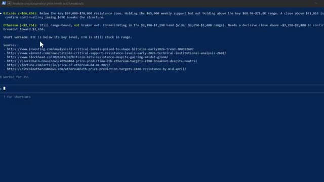
🔍 AgrandirTu lui dis ce que c'est. Un assistant de recherche en cryptographie, un analyste de marché, tout ce que tu veux, et quels outils il a à sa disposition. Deuxièmement, l'environnement. C'est l'espace de travail, un conteneur cloud qu'Anthropic gère pour toi. C'est là que l'agent s'exécute réellement et fait son travail. Tu ne construis pas ça. Tu ne le gères pas. Anthropic s'occupe de tout cela. Troisièmement, la session.
Interface & Outils : Documentation web officielle (Claude API Docs - Claude Managed Agents).
Contenu textuel & Code : Tableau des outils disponibles avec leurs descriptions : Bash (commandes shell), Read/Write/Edit (gestion de fichiers), Glob/Grep (recherche), Web fetch/Web search (accès web).
Action / Démonstration : Présentation des outils à la disposition de l'agent et de sa configuration.
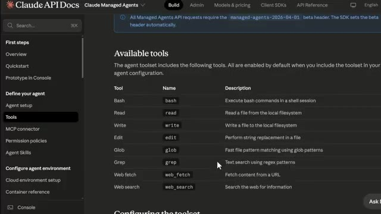
🔍 AgrandirC'est à ce moment-là que vous le démarrez. Vous combinez l'agent et l'environnement, vous lui donnez une tâche, et il se met au travail. Une session peut durer des heures. Elle persiste malgré les déconnexions. Vous pouvez lui envoyer de nouvelles instructions en cours de route si le marché change. Et enfin, les événements. C'est ainsi qu'il communique avec vous en retour.
Interface & Outils : Documentation officielle Claude API Docs et interface de terminal de commande.
Contenu textuel & Code : Extrait de code cURL pour initialiser une session d'agent avec les identifiants d'agent et d'environnement, et sortie textuelle d'analyse de crypto-monnaies avec sources web.
Action / Démonstration : Présentation de la méthode d'initialisation d'une session d'agent suivie de l'affichage des résultats d'exécution de la tâche.
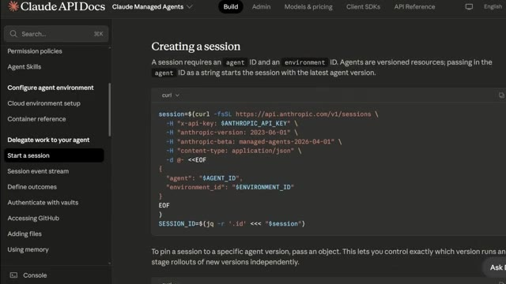
🔍 Agrandir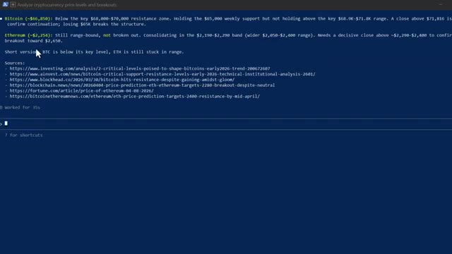
🔍 AgrandirAlors que l'agent travaille, navigue, analyse, écrit, il vous transmet des mises à jour en temps réel. Vous pouvez le regarder travailler ou simplement attendre le résultat final. C'est tout. Agent, environnement, session, événements, quatre éléments. L'ensemble peut être configuré en moins de 10 minutes en suivant la documentation. Beaucoup d'entre vous se demandent peut-être : combien cela coûte-t-il ?
Interface & Outils : Documentation Claude API Docs / Interface web de présentation.
Contenu textuel & Code : Blocs de code cURL pour l'API Anthropic et diagramme explicatif des quatre concepts clés (Agent, Environment, Session, Events).
Action / Démonstration : Présentation de la structure technique et de l'architecture des agents gérés par l'API.
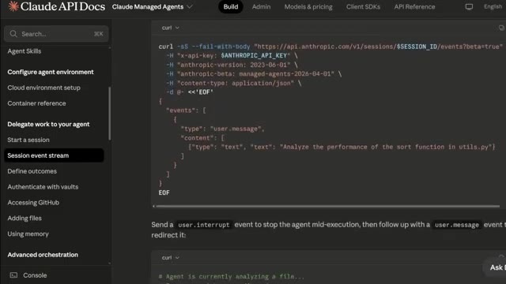
🔍 Agrandir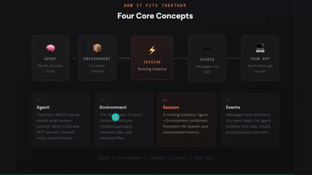
🔍 AgrandirC'est la partie qui m'a le plus surpris. Il y a trois choses pour lesquelles vous payez. La première est l'utilisation des jetons. C'est la même chose que pour l'API Claude classique. Sonnet 4.6 coûte 3 dollars par million de jetons d'entrée et 15 dollars par million de jetons de sortie. Opus 4.6 coûte 5 dollars en entrée, 25 dollars en sortie.
Interface & Outils : Page web de tarification (Pricing) avec un design sombre et des sections de coûts détaillées.
Contenu textuel & Code : Tarifs affichés : Sonnet 4.6 Tokens à 3 $ / 15 $ par million de jetons, Opus 4.6 Tokens à 5 $ / 25 $ par million, Session Runtime à 0,08 $ par heure, Web Searches à 10 $ par 1 000 recherches, ainsi qu'un exemple concret de coût mensuel évalué à environ 6 $ par mois hors jetons.
Action / Démonstration : Présentation des différents composants tarifaires des agents gérés par le présentateur.
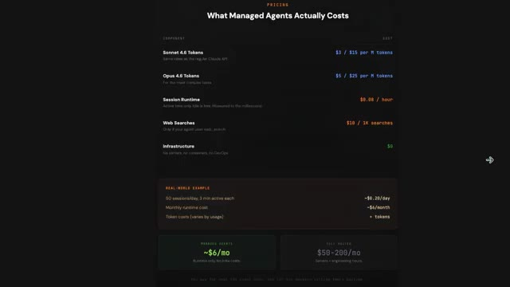
🔍 AgrandirLa plupart des tâches de recherche en trading que vous exécutez utiliseront Sonnet. C'est plus rapide et largement capable. Deuxièmement, les coûts d'exécution sont de 0,08 $ par heure de session. C'est 0,08 $ par heure d'activité de votre agent. Et le temps d'inactivité est totalement gratuit. Donc si votre agent termine une tâche et reste simplement là à attendre la suivante, vous ne payez rien. Et troisièmement, les recherches sur le web coûtent 10 $ par 1 000 recherches. Donc si votre agent parcourt le web à la recherche de nouvelles et de sentiment de marché chaque jour, cela représente toujours une fraction de centime par recherche. Qu'en est-il du coût de l'infrastructure ?
Interface & Outils : Page web de tarification (Pricing) avec interface sombre.
Contenu textuel & Code : Coûts affichés : Sonnet 4.6 Tokens à 3 $ / 15 $ par million de tokens, Opus 4.6 Tokens à 5 $ / 25 $ par million de tokens, Session Runtime à 0,08 $ par heure (temps actif uniquement, temps d'inactivité gratuit), Web Searches à 10 $ par 1 000 recherches, Infrastructure à 0 $. Exemple concret : 50 sessions/jour, 3 min actives chacune pour un coût de ~0,20 $/jour ou ~4 $/mois.
Action / Démonstration : Présentation et explication des coûts d'exécution et de l'utilisation des différents modèles pour les agents de trading.
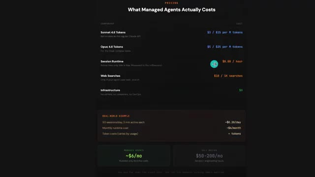
🔍 AgrandirZéro. Pas de serveurs, pas de conteneurs, pas de DevOps. Anthropic s'occupe de tout. Le calcul du monde réel, 50 sessions par jour, chacune active pendant environ trois minutes, coûte environ 6 dollars par mois en temps d'exécution. Comparez cela à 50 à 200 dollars par mois minimum pour des serveurs auto-hébergés. Et ce, avant même de prendre en compte les heures d'ingénierie pour le construire et le maintenir. Pour un assistant de recherche en trading par IA entièrement autonome fonctionnant dans le cloud 24 heures sur 24. Ce n'est rien. Et regardez, ce n'est pas théorique. De grandes entreprises déploient déjà des agents gérés en ce moment même. Sentry l'a associé
Interface & Outils : Interface web de présentation des prix (Pricing page)
Contenu textuel & Code : Tarifs affichés : Sonnet 4.6 ($3 / $15 par M tokens), Opus 4.6 ($5 / $25 par M tokens), Session Runtime ($0.08 / heure), Web Searches ($10 / 1K searches), Infrastructure ($0). Exemple concret : 50 sessions/jour, 3 min actives (~$0.20/jour, ~$4/mois de temps d'exécution). Comparaison finale : ~6$/mois pour les agents gérés contre 50-200$/mois pour des serveurs traditionnels.
Action / Démonstration : Présentation des coûts comparatifs entre l'utilisation d'agents gérés et des serveurs traditionnels.
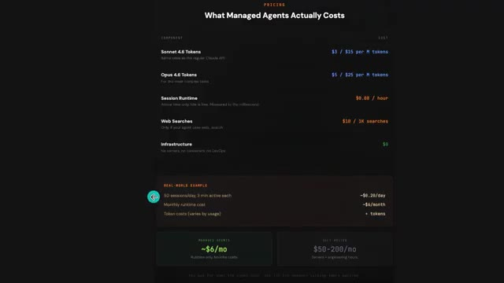
🔍 Agrandiravec leur agent de débogage pour écrire automatiquement des correctifs de code et ouvrir des demandes de tirage. Expédié en semaines au lieu de mois. Asana a construit des coéquipiers IA qui travaillent aux côtés des humains à l'intérieur des projets. Reprenant des tâches, rédigeant des livrables, passant le relais du travail. Rakuten a déployé des agents dans l'ingénierie, le produit, les ventes et la finance, connectés à Slack et Teams. Notion l'utilise pour vous permettre de déléguer du travail directement dans votre espace de travail, exécutant des dizaines de tâches en parallèle. Ce ne sont pas de petites entreprises qui font des expérimentations. Ce sont des déploiements en production à grande échelle. Et si c'est ce que
Interface & Outils : Présentation ou face-caméra explicatif du trader sans interface logicielle partagée.
Contenu textuel & Code : Explications orales des stratégies et mise en contexte méthodologique du marché.
Action / Démonstration : Explications face caméra et analyse conceptuelle des marchés.
peut faire pour eux, imaginez ce que cela peut faire pour votre trading. Et pour les prochaines années, deux sortes de traders existeront. Celui qui utilise l'IA et se simplifie la vie, et celui qui ne le fait pas et fait encore tout manuellement. Et sur le même marché, cela façonnera un résultat très différent. Voici comment vous obtenez tout cela. Je lance la communauté AI Trade Edge.
Interface & Outils : Présentation ou face-caméra explicatif du trader sans interface logicielle partagée.
Contenu textuel & Code : Explications orales des stratégies et mise en contexte méthodologique du marché.
Action / Démonstration : Explications face caméra et analyse conceptuelle des marchés.
Chaque prompt, bot, agent, modèle et guide étape par étape que j'utilise personnellement, le tout regroupé au même endroit. Et tout ce que je construirai à l'avenir sera ajouté directement dans le groupe. Chaque nouvelle intégration, chaque nouvelle stratégie, chaque nouveau prompt, chaque mise à jour. De l'intégration de TradingView au trading sur Telegram et au suivi des baleines sur Hyperliquid.
Interface & Outils : Navigateur web affichant une interface utilisateur sombre (dark mode) avec un menu de navigation par étapes en haut (01 à 05).
Contenu textuel & Code : Présentation des fonctionnalités de suivi des baleines ('Whale Scanning', 'Sentiment Analysis', 'Trade Ideas', 'Wallet Lookup') connectant Claude aux portefeuilles les plus rentables d'Hyperliquid.
Action / Démonstration : Présentation visuelle des capacités du système de suivi des portefeuilles de baleines sur une interface web.
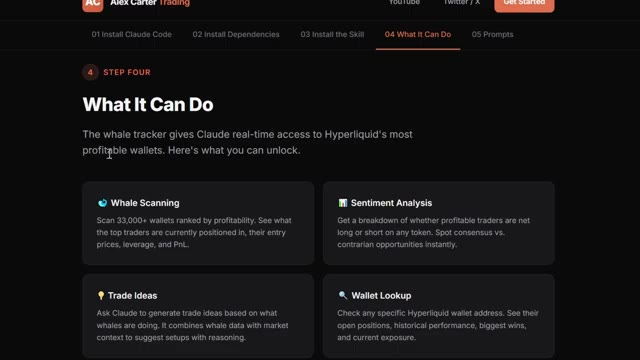
🔍 AgrandirThe moment you join, you get it all. The price is $79.99 a month. And honestly, when you think about what this actually is, the most cutting edge AI trading setup available to retail traders right now, constantly updated with everything included. That is not a lot of money. One good trade covers it. But the first 100 members lock in that rate permanently.
Interface & Outils : Navigateur web affichant la plateforme Whop et une interface de documentation utilisateur.
Contenu textuel & Code : Tarification d'abonnement (79,99 $ / mois) et liste de fonctionnalités techniques (lecture de graphiques, données OHLCV en direct, RSI, MACD, Pine Script).
Action / Démonstration : Navigation et présentation des tarifs et des fonctionnalités de l'outil d'IA pour le trading.
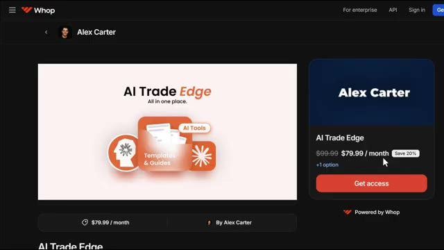
🔍 AgrandirAprès ça, le prix augmente, donc le plus tôt vous vous inscrivez, meilleure est l'offre. Le lien est dans la description, inscrivez-vous maintenant avant que le prix n'augmente. Vous ne pouvez vraiment pas vous permettre de rater ça, et voilà, une introduction aux agents gérés par Clog. Si vous voulez en savoir plus et faire une incursion en profondeur, je mettrai le guide de démarrage rapide en lien dans la description sur la façon de le configurer. Si vous voulez voir la démonstration complète sur la façon de configurer l'exécution de transactions automatisées en utilisant Telegram et TradingView, regardez la vidéo qui apparaît à l'écran en ce moment même. Si vous avez trouvé cela utile, laissez un pouce bleu, cela aide vraiment la chaîne. Abonnez-vous si ce n'est pas déjà fait, et je vous vois dans la prochaine.
Interface & Outils : Whop, Documentation Claude API, TradingView.
Contenu textuel & Code : Commandes d'installation Homebrew (`brew install anthropic/tap/ant`), indicateurs techniques et signaux de trading sur Bitcoin.
Action / Démonstration : Présentation de la plateforme payante, configuration d'agents gérés et analyse graphique de la paire BTCUSDT.P.
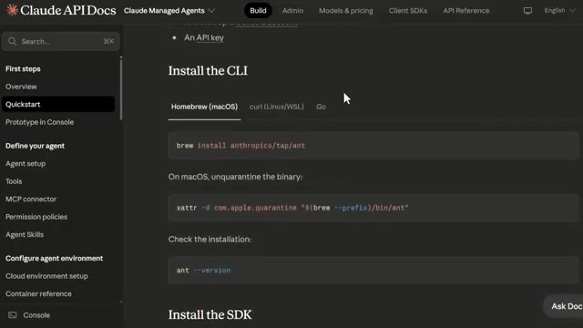
🔍 Agrandir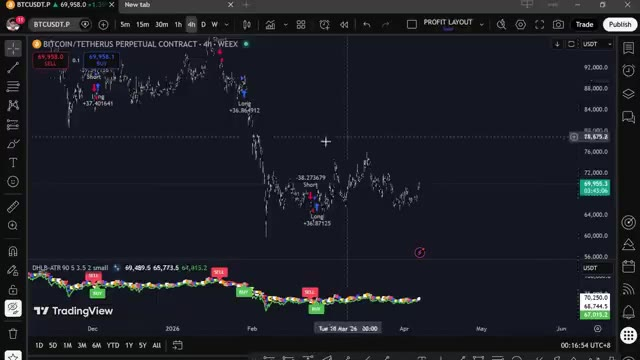
🔍 Agrandir